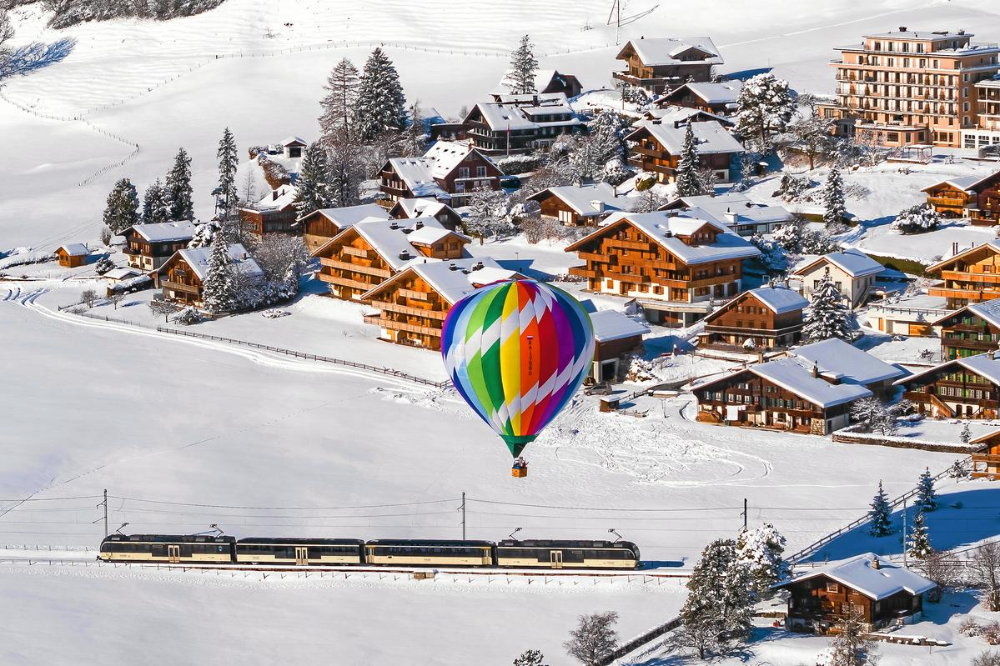
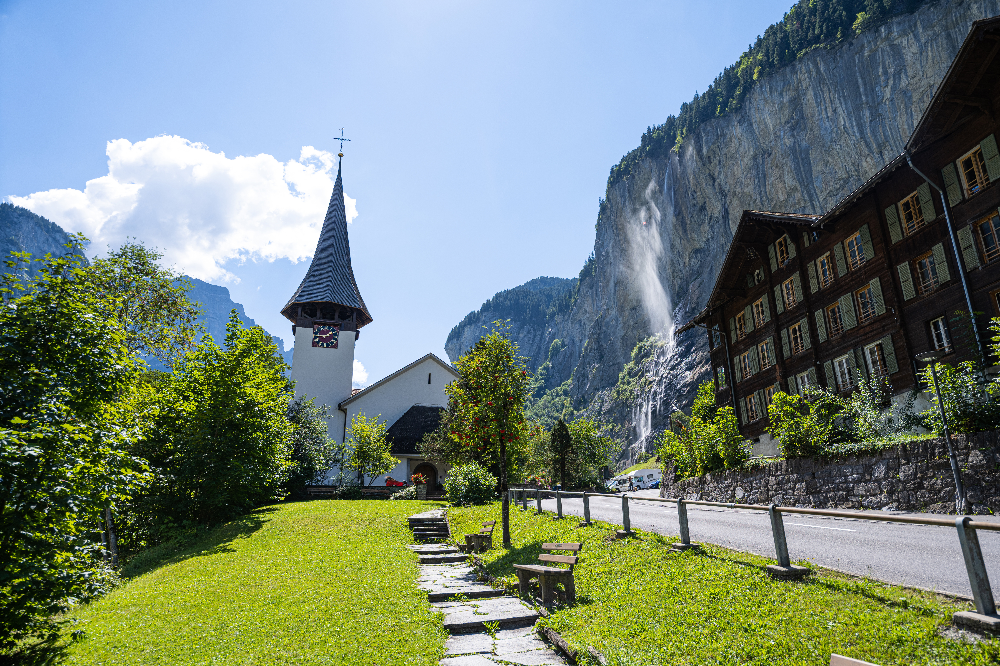
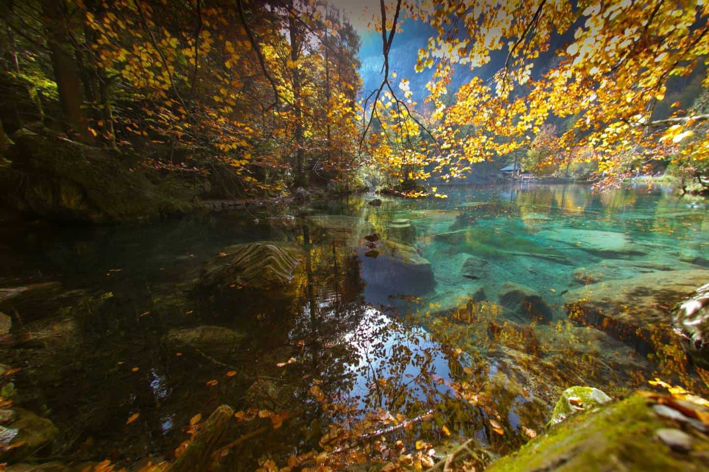

❄️ Winter (Dec–Feb)
- ⛷️ Skiing and snowboarding in Davos, St. Moritz, Zermatt, and Verbier
- 🎄 Cozy Christmas markets in Lucerne, Montreux, and Basel
- 🚂 Scenic Glacier Express through snow-covered valleys
- 🏔️ Snowshoeing and winter hiking in alpine villages
- 🔥 Chalet stays with fondue and fireplace evenings

🌸 Spring (Mar–May)
- 🌷 Blooming landscapes in Ticino and Lake Geneva region
- 🥾 Hiking trails open across the Jura and Pre-Alps
- 🎭 Cultural festivals and open-air concerts begin
- 🚴♀️ Cycling along lakes and vineyards
- 🦢 Wildlife spotting in nature reserves and wetlands

☀️ Summer (Jun–Aug)
- 🏊♂️ Lake swimming in Lucerne, Zurich, and Lugano
- 🚵♂️ Mountain biking in Graubünden and Valais
- 🎶 Open-air festivals like Montreux Jazz and Paléo
- 🚠 Cable car rides to panoramic peaks
- 🌄 Sunrise hikes and alpine picnics

🍂 Autumn (Sep–Nov)
- 🍇 Wine tasting in Lavaux and Valais vineyards
- 🚂 Scenic train rides through golden landscapes
- 🥾 Peaceful hikes with crisp air and fewer crowds
- 📸 Photography of vibrant foliage and mountain views
- 🎃 Harvest festivals and local food markets
